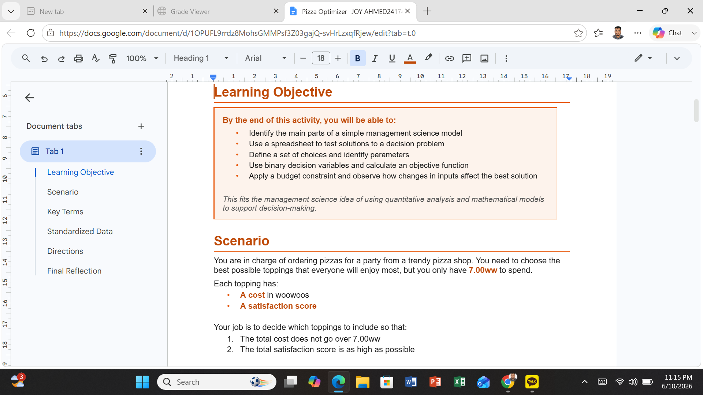
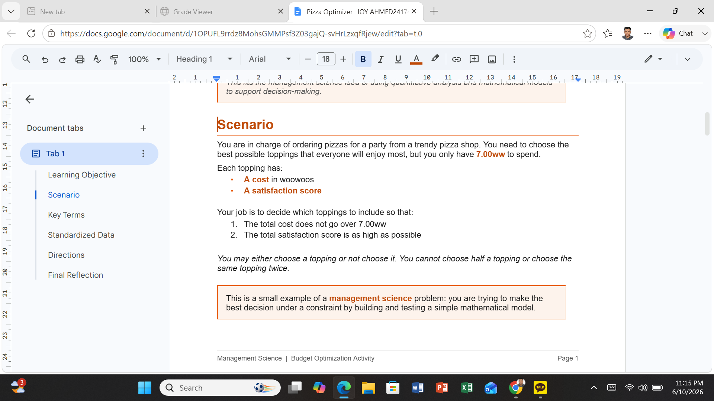
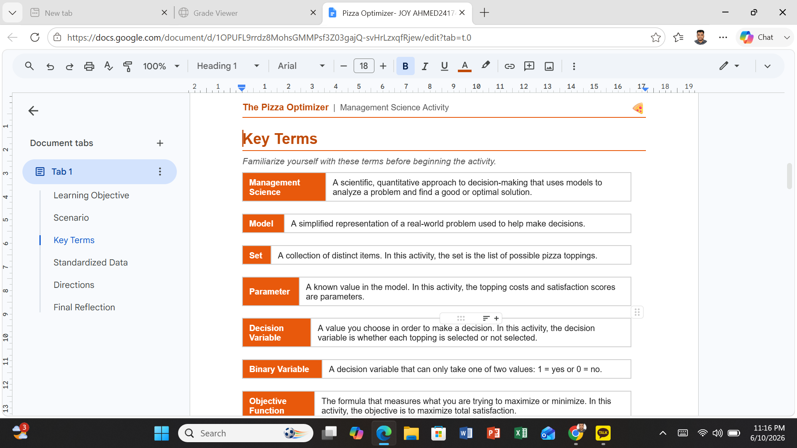
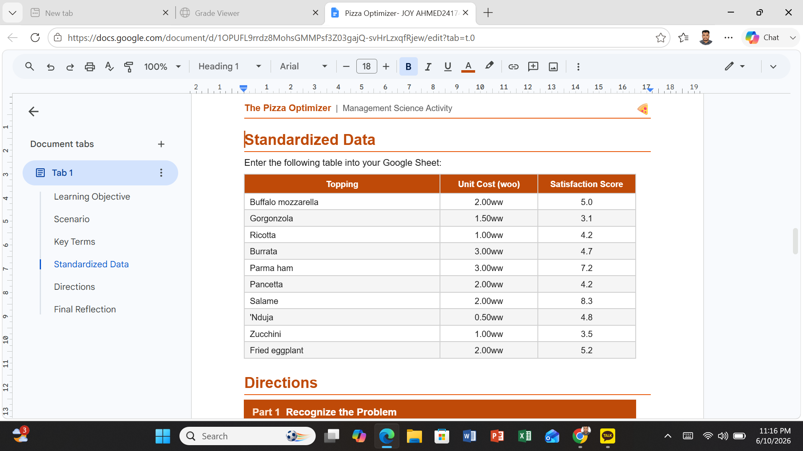
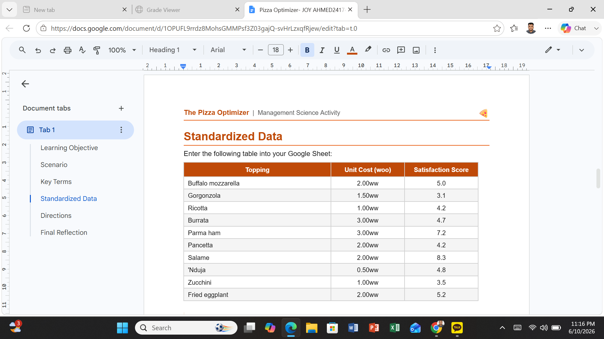
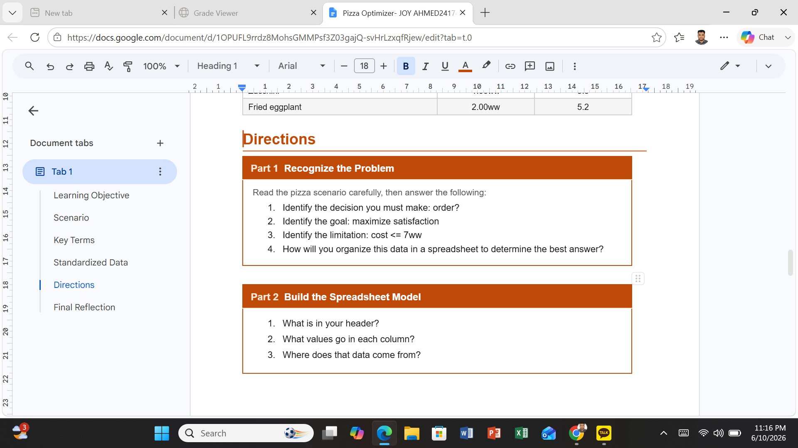
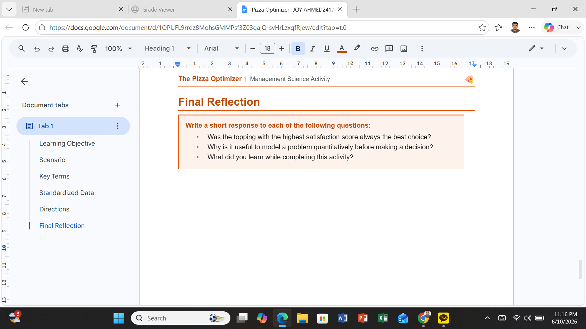

Project Overview
The Pizza Optimizer activity required selecting pizza ingredients and combinations while working under specific constraints. Using spreadsheet optimization techniques, I evaluated different options and identified the most effective solution.
- Optimization
- Binary Variables
- Budget Constraints
- Spreadsheet Modeling
- Decision Analysis
Evidence







These screenshots demonstrate the optimization process, spreadsheet setup, calculations, and final solution used during the activity.
How the Model Worked
The objective was to create the best pizza combination while satisfying cost and ingredient constraints. The spreadsheet evaluated multiple possibilities and identified combinations that maximized value without exceeding available resources.
- Select ingredients strategically
- Stay within the available budget
- Evaluate alternative combinations
- Choose the highest-value solution
What Did I Learn?
This activity showed me how optimization techniques can be applied to everyday decision-making situations. Although the scenario involved pizza, the same principles are used in business, manufacturing, transportation, and resource planning.
I learned that small constraints can significantly affect decision outcomes and that analytical models help identify better solutions than relying on intuition alone.
Real-World Applications
- Production planning
- Supply chain management
- Inventory optimization
- Budget allocation
- Marketing resource planning
- Operations management
Businesses use optimization models to reduce costs, improve efficiency, and maximize customer satisfaction.